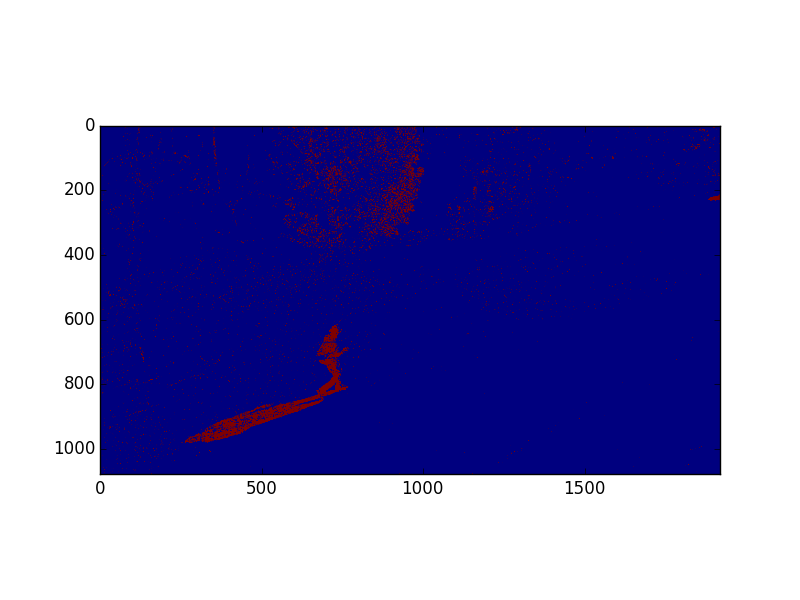

Project Overview
In conjunction with the drive toward an Internet of Things (IoT) society has been a commoditization of surveillance technology. As camera and information systems technology has progressed, so to has the number and reliance on camera systems to monitor and protect public spaces such as city streets, secured private spaces such as an industrial complex, even people's homes. With the rise in surveillance technology, there is a greater need for autonomous monitoring of the data feeds coming from these monitoring system. The volume of data that is being recorded from deployed surveillance technology has outgrown the capacity of human operators. [INSERT FACT ABOUT NYC/LONDON/ETC SURVEILLANCE CAMERAS]. This is particularly true of facilities with multiple cameras monitoring perimeter security.
This project, completed for the Fall 2015 Harvard CS205 course, attempts to lend the building blocks to automate anomaly detection in surveilance video. The focus of this project, computationally, was to develop a detection algorithm that will run in real-time and provide decision support for an operator tasked with monitoring multiple camera feeds. To acheive real-time processing, detection and decision algorithms (catalogued below) were written in Python, leveraging the pycuda module to run on a designated NVIDIA Jetson TK1.
Prior Work
Outline academic background.
Hardware Setup
Outline how we got data.
Code Work Flow
Schematic with intermediate images demonstrating our process.
Like this!
Performance
Discuss performance gains from serial implementation to parallel...
Summary and Conclusions
Outline the cool stuff we learned and how we overcame any challenges that arose.